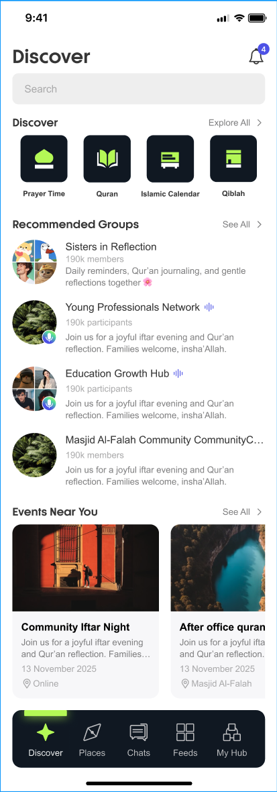

1 2 3| # | Current Issue | Optimization Action | Basis |
|---|---|---|---|
| 1 | Bottom nav is a floating rounded capsule, not fixed — weak navigation anchor while scrolling, easily pushed out of view by content | Switch to a fixed full-width solid bottom bar (WeChat as reference): always pinned to the bottom, clearly separated from content by a divider, content scrolls beneath it; keeps Wahda's dark brand surface and green active state | User Directive ①V4 · Fixed Bottom Bar (Group C) |
| 2 | New content (new Feeds / new Places / new messages / My Hub updates) gives no hint on the bottom bar — users must tap into each tab to find out | Tab-level unread badges: Chats shows an unread number (e.g. 3); Places / Feeds / My Hub show red dots; dots clear on entering the tab, same logic as WeChat | User Directive ②#5 Globalized Notification Center |
| 3 | All notifications concentrate in the Discover top-right bell; other pages have no notification entry point | Bell kept as the global aggregated inbox (its unread count equals the sum of tab badges); persistent top bell + bottom-bar tab badges form a two-level system: tap the bell for everything, tap a tab for its category | #5 Globalized Notification CenterREQ-046 · 066 · 091 |